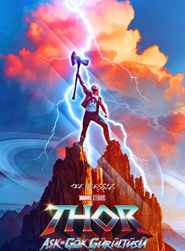

Thor: Love and Thunder
8 July 2022 / Action, Adventure, Sci-Fi Directed by Taika Waititi Cast: Chris Hemsworth, Natalie Portman, Christian Bale Thor, leaving his adventurous life behind, embarks on a journey of inner peace, unlike the journeys he has taken so far. However, his peaceful retirement is interrupted by the appearance of the murderer known as Gorr the God Butcher. He embarks on a tough fight with Gorr the God Butcher, who wants the gods destroyed.
After: Separation
20 May 2022 / 1h 38min / Drama, Romance Directed by Castille Landon Cast: Josephine Langford, Hero Fiennes Tiffin, Louise Lombard Tessa's life changes completely after she makes the most important decision of her life. Revealing secrets about his family jeopardizes their relationship. Tessa, who cannot trust anyone in her family, and what she learns about Hardin causes her life to become even more complicated. Will Hardin and Tessa's love be enough to sustain their relationship?
Avatar: The Way of Water

16 December 2022 / Adventure, Science Fiction Director James Cameron Cast: Sam Worthington, Zoe Saldana, Sigourney Weaver The continuation of the Avatar series, which became a global phenomenon in 2009; this time, it both goes to the origins of the story universe created by James Cameron and aims to expand its borders. Now a family, Jake and Neytiri are forced to leave their home. So Jake and Neytiri start exploring places outside of Pandora, including above and below the water.
Minions 2: Rise of Gru
1 July 2022 / 1h 30min / Action, Animation, Comedy Director Kyle Balda, Brad Ableson, Jonathan Del Val Cast: Steve Carell, Taraji P. Henson, Michelle Yeoh Stuart, Kevin and Bob are furious that they can't get their bananas from a supermarket. Wanting to find a solution to this situation, the team set off to the White House. When they come to the White House to complain about the situation, they find themselves in front of the door. Stuart, who is confused and angry that they were fired, ...